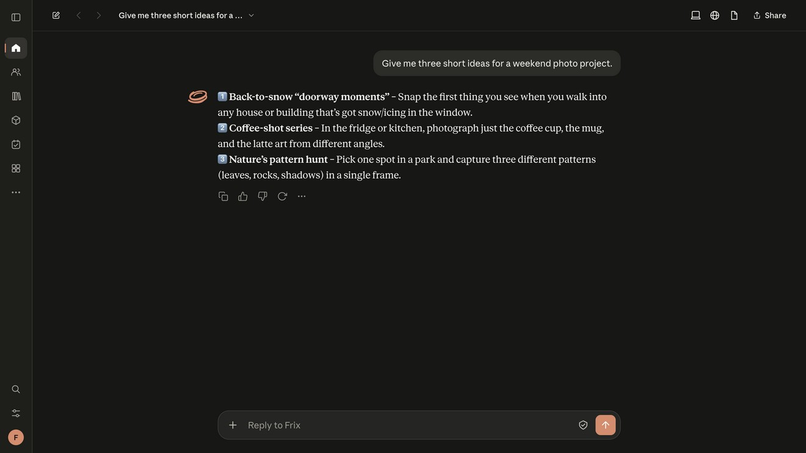

Frix for Windows
Chat, work with files, and build visualizers. Open Frix and start a conversation without an account or access code.
Download for Windows
Windows 10 or 11 · x64

Frix Motion
Animate text, shapes, and images on a timeline and export video.
macOS 13 or later · Apple silicon · Developer preview